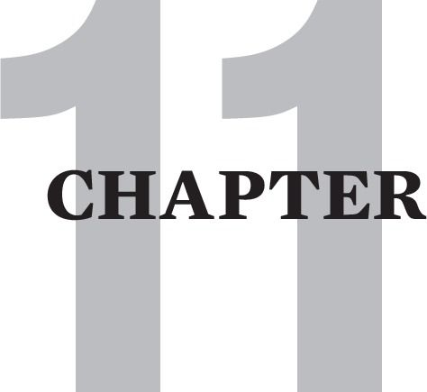

GRIEVING
Grieving is an irreplaceable tool for resolving the overwhelming feelings that arise during emotional flashbacks. Moreover, grieving is the key process for working through the host of losses that come from growing up in a Cptsd-inducing family.
We grieve the losses of childhood because these losses are like deaths of important parts of ourselves. Effective grieving brings these parts back to life. In this chapter we describe the healing that is available through the four practices of grieving: angering, crying, verbal ventilating and feeling.
If you find that crying or angering is inaccessible, does not help, or makes you feel worse, then your recovery work my need to focus more on deconstructing and shrinking your inner critic.
Grieving expands Insight and Understanding
I saw grief drinking a cup of sorrow and called out:
“It tastes sweet doesn’t it?”
“You have caught me”, grief answered,
“And you’ve ruined my business
How can I sell sorrow, when you know its blessing?” -RUMI
Insight, as crucially important as it is, is never enough to attain the deeper levels of recovering. No amount of intention or epiphany can bypass a survivor’s need to learn to lovingly care for himself when he is in an emotional flashback. It is crucial that we respond to ourselves with kindness when we are feeling scared, sad, mad, or bad.
Grieving aids the survivor immeasurably to work through the death-like experience of being lost and trapped in an emotional flashback. Grieving metabolizes our most painful abandonment feelings, especially those that give rise to suicidal ideation, and at their worst, active suicidality.
Recoverees also need to grieve the death of their early attachment needs. We must grieve the awful fact that safety and belonging was scarce or non-existent in our own families. We need to mourn the myriad heartbreaks of our frustrated attempts to win approval and affection from our parents.
Grieving also supports recovery from the many painful, deathlike losses caused by childhood traumatization. Key childhood losses - addressed throughout this book - are all the crucial developmental arrests that we suffered. The most essential of these are the deaths of our self-compassion and our self-esteem, as well as our abilities to protect ourselves and fully express ourselves.
Grieving The Absence Of Parental Care
As our capacity to grieve evolves, we typically uncover a great deal of unresolved grief about the deadening absence of the nurturance we needed to develop and thrive. Here are the key types of parental nurturing that all children need in order to flourish. Knowing about these unmet needs can help you to grieve out the unreleased pain that comes from having grown up without this type of support. Moreover, this knowledge can guide you to reparent and interact with yourself more nurturingly.
1. VERBAL NURTURANCE: Eager participation in multidimensional conversation. Generous amounts of praise and positive feedback. Willingness to entertain all questions. Teaching, reading stories, providing resources for ongoing verbal development.
2. SPIRITUAL NURTURANCE: Seeing and reflecting back to the child his or her essential worth, basic goodness and loving nature. Engendering experiences of joy, fun, and love to maintain the child’s innate sense that life is a gift. Spiritual or philosophical guidance to help the child integrate painful aspects of life. Nurturing the child’s creative self-expression. Frequent exposure to nature.
3. EMOTIONAL NURTURANCE: Meeting the child consistently with caring, regard and interest. Welcoming and valuing the child’s full emotional expression. Modeling non-abusive expression of emotions. Teaching safe ways to release anger that do not hurt the child or others. Generous amounts of love, warmth, tenderness, and compassion. Honoring tears as a way of releasing hurt. Being a safe refuge. Humor.
4. PHYSICAL NURTURANCE: Affection and protection. Healthy diet and sleep schedule. Teaching habits of grooming, discipline, and responsibility. Helping the child develop hobbies, outside interests, and own sense of personal style. Helping the child balance rest, play, and work.
My book, The Tao of Fully Feeling, contains extensive guidelines and encouragements for identifying and grieving the losses of childhood. Sandra Bloom’s article: “The Grief That Dare Not Speak Its Name, Part II, Dealing with The Ravages of Childhood” also identifies childhood losses from trauma in a very specific and compelling way. [Please see www.sanctuaryweb.com].
It is often difficult to become motivated to grieve losses that occurred so long ago. Many of these losses seem so nebulous that trying to embrace grieving is a bit like trying to embrace dental work. Who wants to go to the dentist? But who doesn’t go once the toothache becomes acute?
Soul ache is considerably harder to assign to the losses of childhood, yet those who take the grieving journey described below come to know unquestionably that the core of their soul ache and psychological suffering is in the unworked through losses of growing up with abandoning parents.
These losses have to be grieved until the person really gets how much her caretakers were not caretakers, and how much her parents were not her allies. She needs to grieve until she stops blaming herself for their abuse and/or neglect. She needs to grieve until she fully realizes that their abysmal parenting practices gave her that awful gift that keeps on giving: Cptsd. She needs to grieve until she understands how her learned habit of automatic self-abandonment is a reenactment of their abject failure to be there for her.
Mourning these awful realities empowers our efforts to develop a multidimensional practice of self-care. As we grieve more effectively, our capacities for self-compassion and self-protection grow, and our psyche becomes increasingly user friendly.
GRIEVING AMELIORATES FLASHBACKS
“Pain is excess energy crying out for release.” – Gerald Heard
Grieving sometimes seems sacramental to me in its ability to move me out of the abandonment mélange, that extremely painful and upsetting amalgam of fear, shame and depression that is at the emotional core of most flashbacks.
A survivor can learn to grieve himself out of fear - the death of feeling safe. He can learn to grieve himself out of shame - the death of feeling worthy. He can learn to grieve himself out of depression - the death of feeling fully alive.
With sufficient grieving, the survivor gets that he was innocent and eminently loveable as a child. As he mourns the bad luck of not being born to loving parents, he finds within himself a fierce, unshakeable self-allegiance. He becomes ready, willing and able to be there for himself no matter what he is experiencing - internally or externally.
Griefwork also releases you from the impatience and frustration that can arise when you get re-stuck in an inner critic attack. This is especially important during those “monster” flashbacks when the critic can bully you into wanting to give up. At such times, angering and crying at this terrible intrusion from your past can rescue you from forgetting how far you have come and how much safer you are now.
Inner Critic Hindrances To Grieving
The greatest hindrance to effective grieving is typically the inner critic. When the critic is especially toxic, grieving may be counterproductive and contraindicated in early recovery. Those who were repeatedly pathologized and punished for emoting in childhood may experience grieving as exacerbating their flashbacks rather than relieving them.
I have worked with numerous survivors whose tears immediately triggered them into toxic shame. Their own potentially soothing tears elicited terrible self-attacks: “I’m so pathetic! No wonder nobody can stand me!” “God, I’m so unlovable when I snivel like this!” “I f*ck up, and then make myself more of a loser by whining about it!” “What good is crying for yourself – it only makes you weaker!”
This latter response is particularly ironic, for once grieving is protected from the critic, nothing can restore a person’s inner strength and coping capacity like a good cry. I have defused active suicidality on dozens of occasions by simply eliciting the suffering person’s tears.
Angering can also immediately trigger the survivor into toxic shame. This is often true of instances when there is only an angry thought or fantasy. Dysfunctional parents typically reserve their worst punishments for their child’s anger. This then traps the child’s anger inside.
Critic management is often the primary work of early stage grief work. This work involves recognizing and challenging the ways the critic is blocking or shaming the processes of grieving. As disidentification from the critic increases, grieving can then best be initiated with low intensity verbal ventilation. Over time verbal ventilation can be allowed to gradually increase in sad and angry intonation.
Once the critic has been sufficiently diminished and once thought-correction techniques have made the psyche more user-friendly, a person begins to tap into grief’s sweet relief-granting potential. He learns to grieve in a way that promotes and enhances compassion for the abandoned child he was and for the survivor he is today – still struggling in the throes of painful flashbacks.
Defueling The Critic Through Grieving
Fear drives the toxic inner critic. The critic feeds off fear and flashes the survivor back to the frightening times of childhood. She gets stuck seeing herself only through her parents’ contemptuous, intimidating or rejecting eyes. She then imitates them and scornfully mocks herself as “defective”, “ugly”, “unlovable”. She scares herself with endangerment scenarios and abhors herself for insignificant imperfections.
Because fear is a core emotional experience, emotional tools are needed to manage the fright that runs haywire during a flashback. Healthy angering and crying can short-circuit fear from morphing into the flashback-triggering cognitions of the critic. I have seen grieving bring the critic’s devastating programs of drasticizing and catastrophizing to a screeching halt on thousands of occasions.
It appears that children are hard-wired to release fear through angering and crying. The newborn baby, mourning the death of living safely and fully contained inside the mother, utters the first of many angry cries not only to call for nurturance and attention, but also to release her fear.
In the dysfunctional family however, the traumatizing parent soon eradicates the child’s capacity to emote. The child becomes afraid and ashamed of her own tears and anger. Tears get shut off and anger gets trapped inside and is eventually turned against the self as self-attack, self-hate, self-disgust, and self-rejection. Self-hate is the most grievous reenactment of parental abandonment.
Over time, anger also becomes fuel for the critic and actually exacerbates fear by creating an increasingly dangerous internal environment. Anything the survivor says, thinks, feels, imagines or wishes for is subjected to an intimidating inner attack.
Here are some common anger-powered critic attacks. They are presented in the first person voice, which the critic inevitably acquires: “Why did I ask such a stupid question?” “Could I have had an uglier expression on my face?” “Who am I kidding? How could an undeserving loser like me wish for love?” “No wonder I feel like sh*t; I am a piece of sh*t!”
Recovery is enhanced immeasurably by co-opting this anger from the critic and using it for the work of distancing from and shrinking the critic, as we shall see below. As you become proficient at grieving, you will notice that your critic’s volume and intensity ebbs dramatically. In fact, without the aid of effective grieving, progress in critic shrinking can only go so far.
THE FOUR PROCESSES OF GRIEVING
Grieving is at its most effective when the survivor can grieve in four ways: angering, crying, verbal ventilating and feeling.
1. Angering: Diminishes Fear and Shame
Angering is the grieving technique of aggressively complaining about current or past losses and injustices. Survivors need to anger - sometimes rage - about the intimidation, humiliation and neglect that was passed off to them as nurturance in their childhoods. As they become adept at grieving, they anger out their healthy resentment at their family’s pervasive lack of safety. They become incensed about the ten thousand betrayals of never being helped in times of need. They feel rage that there was never anyone to go to for guidance or protection. They bellow that there was no one to appeal to for fairness or appreciative recognition of their developmental achievements.
My first book, The Tao of Fully Feeling, Harvesting Forgiveness Out Of Blame, explicates in great detail a safe process for angering out childhood pain in a way that does not hurt the survivor or anyone else. In most cases, survivors do not have to directly anger at and blame their living parents. The key place to direct it is at your internalized parents - the parents of your past. The most common exception to this occurs when a parent is still abusive. This and other exceptions are explored in depth in my first book.
Angering is therapeutic when the survivor rails against childhood trauma, and especially when he rails against its living continuance in the self-hate processes of the critic. Angrily saying “No!” or “Shut Up!” to the critic, the deputy of his parents, externalizes his anger. It stops him from turning this anger against himself, and allows him to revive the lost instinct of defending himself against unjust attack.
Additionally, angering rescues the survivor from toxic shame. It rescues him from blindly letting his parents’ venomous blame turn into shame. Angering redirects blame back to where it belongs. It also augments his motivation to keep fighting to establish internal boundaries against the critic.
Angering can be done alone or in the presence of a validating witness, such as a trusted friend or therapist. Over time the vast majority of angering needs to be done silently in the privacy of your own psyche. This is the anger-empowered thought-stopping of shielding yourself from inner critic attacks.
Many survivors are so identified with the critic that it becomes their whole identity. Such survivors typically need to focus on fighting off the critic until they have established the healthy ego function of self-protection.
Angering also serves to rescue a person from the childlike sense of powerlessness that she is flashing back to. It reminds her that she inhabits an adult body with which she can now defend herself.
Through all these functions, angering serves to reduce or antidote fear. It reawakens and nurtures the instinct of self-preservation. With practice it increasingly builds a sense of both outer and inner boundaries. These boundaries increasingly move us out of harm’s way. They offer safety from the bullying of others, and safety from the most damaging bully of all – the inner critic.
Finally, angering can also empower the myriad thought corrections and substitutions needed to establish the survivor’s belief in her own essential goodness and in the lovability of discriminately chosen others. Angering bolsters her for the long-term, gradual process of wrestling her self-image away from the critic and reeducating the psyche to make it both user- and intimacy-friendly.
Angering Helps Deconstruct Repetition Compulsion
Survivors need to resuscitate their instinctual anger about parental maltreatment or they risk blindly accepting others’ reenactments of these behaviors.
A meek, visibly fearful client of mine suffered devastating sexual seductions by trusted male figures on three occasions in her adult life. Over time we traced these back to a childhood betrayal by a trusted uncle, the only seemingly kind caretaker of her childhood. She was emotionally abandoned by her parents, and he preyed upon her loneliness. He gradually took appropriate physical affection, one increment at a time, into contact that became increasingly sexual.
My client was helpless with her uncle because her ability to say “no” was parentally extinguished by the time she was in pre-school. The ability to say “no” is the backbone of our instinct of self-protection. Consequently, she was unable to protest his sexual violations.
On subsequent occasions in her life, a minister, a doctor and then a therapist exploited her via a reenactment of this original scenario. She was so lost in flashback all three times that she did not protest their exploitive betrayals. She could only react to the situations later by turning her anger inward, and blaming and shaming herself for not stopping it.
Eventually during our work together, she was able to engage in the angering process of grieving. After about six months of my witnessing and validating her anger at her various perpetrators, she came in one week glowing with pride. She welled with tears of joy and relief as she described her success in stopping an office predator who was in the early stages of a similar seduction.
This was the stage of seemingly friendly touching. But unwanted pats on the back gradually escalated into mild sexual innuendo, lingering touches on her hand and then her forearm. These were the first inappropriate advances that she had never been able to protest with her previous abusers. She was thrilled – in awe of herself – that she was able to say, in the presence of another worker no less: “Please don’t touch me. I don’t like it when you touch me, and I don’t want you to touch me anymore”. The seduction was immediately terminated.
2. Crying: The Penultimate Soothing
In grieving, crying is the yin complementary process to the yang process of angering. When we are hurt, we instinctively feel sad as well as mad. The newborn child, hurt by the loss of the perfect security of the womb, howls an angry cry.
Crying is also an irreplaceable tool for cutting off the critic’s emotional fuel supply. Tears can release fear before it devolves into frightened and frightening thinking. In fact, crying is sometimes the only process that will resolve a flashback. I have witnessed my own critic wither into innocuousness hundreds of times after a good cry. On thousands of other occasions, I have seen my clients dissolve their fear, shame and self-abandonment with the solvent of their tears. I have also seen them then surface into a healthily angry place, determined to confront a current unfairness that they now find unacceptable.
A client who left a year-long therapy to move elsewhere recently wrote to me about an experience that she had with crying. She was hospitalized with terrible stomach pain and soon learned that she had cancer. She had wisely cut off contact with a toxic family, but was all alone in her new living situation. She was beside herself with fear, and felt like she was on the verge of a nervous breakdown. She wrote: “I know you think that all that talking you did to me about crying didn’t get through. So did I in fact, but at the moment I was feeling the most hopeless, some of your words came back to me, and a rainstorm of tears fell out of me. It scared me at first, but I soon started feeling this amazing sense of relief, and that I would be OK if I let them operate on me. It’s now twelve months since then and many tears later [not to mention a bit of barking at God] and I seem to be well and truly in the clear.”
Here is another testimony to the power of tears. It is excerpted from an e-mail of a male client who wrote to me six months after we finished a year long course of therapy. “I think it’s the tears..... crying so much of late.....you were right! It’s great; I love it, tears of sadness, tears at the beauty in the world, tears of grief and loss, and tears of gratitude that my life is finally becoming manageable and even intimate. I’ve cried more in the past couple of months than I have done the past couple of decades. I am actually opening up to life, it’s become less narrow, it’s not just pain, shame, guilt.....there’s something else, something quite beautiful.”
An additional benefit of crying is that unabashed tears stimulate the relaxation response of the parasympathetic nervous system. This counterbalances the excessive sympathetic nervous system hyperarousal we experience in a flashback.
As we learn to grieve effectively, we allow ourselves to mourn about the lack of positive parental attention in our childhoods. We feel sorrow about the horrible reality that parental attention was typically negative and dangerous. As recovering progresses, we also cry for the child who not appreciated and reflected as special, worthy, and easy to love.
Crying And Self-Compassion
When we greet our own tears with self-acceptance, crying awakens our develop- mentally arrested instinct of self-compassion. Once we establish self-compassion through consistent and repeated practice, it becomes the cornerstone of an increasing sense of self-esteem. When an attitude of self-compassion becomes habitual, it can instantly antidote the self-abandonment that so characterizes a flashback.
Moreover self-compassion creates a foundation from which we can build authentic, intimacy-enhancing compassion for others. The depth of our ability to be there for an intimate generally depends on the depth of our capacity to practice unwavering allegiance to ourselves.
Crying And Angering In Concert
Crying and angering are the two key emotional tools for releasing the pain of the abandonment mélange. Typically we need both processes to attain full release.
Crying and angering together differs from whining. Whining is a type of emoting that gives grieving a bad name. Whining is a delicate subject because many people who complain and/or cry in a healthy manner are pathologized as “whiners.” Dysfunctional whining however is often an unhealthy mixture of angering and crying, where either the anger or sadness is repressed but leaks through in a grating manner.
Here are two examples of this. When a hurt person only knows how to express anger, his repressed sadness unconsciously seeps into his anger in a way that makes him sound like a martyr or someone with delusions of persecution. Because there is no substantial release of his sadness, no amount of whining brings him relief, and he can angrily whine endlessly in a way that exhausts his listener’s empathy. Similarly when a hurt person is only able to cry, repressed anger tinges her sadness and makes it sound like irritable and interminable bellyaching. One of my clients calls this “anger coming through a very small hole.”
Many of us suffer from a socialization process that relegates angering to men and crying to women. From an early age boys are shamed for crying while girls are treated similarly for angering. Hence boys become men who can only vent their emotional pain through angering. Sadness then must morph into an irritable mood, aggravated whining or angry catharsis. Similarly, some women unconsciously try to squeeze their anger out by whining or crying in a way that devolves into feeling stuck in helplessness and self-pity.
Many men also rely on anger to carry all of their emotional expression. They get mad when they are scared, humiliated or feel down. Many women, on the other hand, can only try to cry out these feelings. This typically results in a very incomplete release. The full motion of emotion is arrested. Half of the normal emotional release process is then stymied in each gender.
Without complete emoting of his hurt, a survivor can become stuck in moodiness. His unexpressed emotion deteriorates into a stagnant and lingering mood. This moodiness can range from festering resentment to a shame-tainted self-pity that is anything but self-compassionate. Blocked anger can degenerate into bitter sullenness, and blocked sadness can deteriorate into melancholic self-indulgence.
How this contrasts with the healthy grieving of my six-year old son, who has to periodically grieve the loss of his narcissistic entitlement. Less and less does he get to be what Freud called: “His majesty the baby”.
As his previously apt entitlement lessens, he mildly bawls at new rules that are age-appropriate for him to learn. Bawling is the evolution of the baby’s angry cry, and it releases pain through angry crying. He howled a bit this afternoon about the “unfairness” of having to do his homework after school before he could play some more.
As we climbed the 37 stairs to our home, he punctuated his crying with a flurry of angry condemnations: “I don’t like you daddy. You’re not fair. I’m not going to be your friend”. I am grateful for this healthy grieving, and still somewhat amazed that I can so calmly “hold” it as I help him metabolize this latest loss of early childhood narcissistic privilege.
By the time we get to the top of the stairs he opens the door and genuinely peals out a guileless laugh: “Daddy, look! Picachu fell off the table. Daddy can we play Pokémon after I practice writing my letters?”
Grieving has almost instantly delivered him from painful loss into eager apprehension of what is fun about life and what there is to look forward to. How frequently, I see my clients reemerge into remembering their real, present-day resourcefulness once they have grieved through a painful flashback.
When we can both anger and cry while re-experiencing our early abandonment in a flashback, we can obtain a more complete release from the abandonment mélange. Each survivor does well to assess whether his angering or crying is blocked or stultified, and to then work at recovering it.
There are of course numerous men and women who are reverse examples of the gender polarization mentioned above. Moreover, there are many survivors in whom both angering and crying are blocked. They also benefit inordinately from rescuing the healing balm of both anger and tears from the stultifying prohibitions of the critic.
If you are unable cry or feel angry, focusing on your breath may help you to emote. This is especially true if you attend to the sensations in your abdominal region as it expands and contracts during respiration. Deep, slow and rhythmic breathing stretches and expands various visceral muscles and internal organs in ways that sometimes bring feelings into awareness.
If this does not help, Holotropic Rebirthing and Reichian therapy employ special breathing techniques to help free stuck emotions. I know many survivors who first reclaimed their capacity to emote through these techniques.
3. Verbal Ventilation: The Golden Path To Intimacy
“Joy shared is doubled. Sorrow shared is halved.” - Old Chinese saying
Verbal ventilation is the third process of grieving. It is the penultimate resolver of emotional flashbacks. Verbal ventilation is speaking or writing in a manner that airs out and releases painful feelings. When we let our words spring from what we feel, language is imbued with emotion, and pain can be released through what we say, think or write. As our grieving proficiency increases, we can verbally ventilate about our losses, using shame-dissolving language to tell the story of how we were unfairly deprived of our birthright to be welcomed into a family that cherished us.
My favorite technique to enhance verbal ventilation is to encourage the survivor to talk in an uncensored manner about whatever comes to his mind while he focuses on his feelings. If his feelings are not in awareness, focusing on bodily sensations can provide rich grist for verbally venting.
Verbal Ventilation is therapeutic to the degree that a person’s words are colored by and descriptive of the anger, sadness, fear, shame and/or depression she feels. Ventilation that is liberally punctuated with actual crying or angering is especially powerful.
Theoretical Neuroscience Of Verbal Ventilation
Verbal ventilation is a tool that can remediate brain changes that are caused by Cptsd. Susan Vaughan’s MRI research demonstrates that emotional flashbacks over-activate the emotionally oriented right-brain and under-activate the thinking-oriented left-brain. With this hemispheric polarization, there is an overwhelming reemergence of childhood pain that is emotionally remembered by the memory-oriented right-brain. At the same time, the survivor loses access to the higher cognitive functions of her left-brain. This temporary loss of cognitive perspective explains why it is so hard for a survivor to realize that she is only flashing back, and not really lost in the danger, helplessness and hopelessness of the past.
Verbal ventilation, at its most potent, is the therapeutic process of bringing left-brain cognition to intense right-brain emotional activation. It fosters the recoveree’s ability to put words to feelings, and ultimately to accurately interpret and communicate about his various feeling states. When this process is repeated sufficiently, new neural pathways grow that allow the left- and right-brain to work together so that the person can actually think and feel at the same time.
The corpus callosum is the part of the brain that connects the left and right hemispheres. Research shows that the corpus callosum is smaller in some Cptsd survivors. Further research shows that the brain can generate new neurons and new neuronal connections to remedy this situation.
Thinking And Feeling Simultaneously
When a survivor becomes proficient at verbal ventilation, she heals a crucial developmental arrest. She learns to think about feeling states in a way that creates healthy, helpful and appropriate responses to feelings. These responses are characteristically respectful to herself and to whomever she is with. In his book, Emotional Intelligence, Daniel Goleman writes that this is a core trait of emotional intelligence.
With continued practice, verbal ventilation coordinates the left and right hemispheres of the brain so that whenever the right-brain is hyper-activated in flashback, the left-brain is also fully engaged [this also can be seen in an MRI]. With the left-brain back on line, the survivor can remember to use the flashback management steps to successfully help manage a flashback.
As with angering and crying, verbal ventilation is only effective when it is liberated from the critic’s control. In early recovery, verbal ventilation can easily shift into verbal self-flagellation. Verbally ventilating from the self-attacking or drasticizing perspective of the critic is rarely effective grieving. Instead it typically triggers or intensifies flashbacks, which in turn frequently generates self- and intimacy-injuring behavior.
Many survivors in early recovery are unable to notice their unconscious shifts into over-identifying with the critic’s point of view. When this is the case, they usually need the help of a therapist or sufficiently recovered intimate to help them recognize and neutralize the critic.
Verbal Ventilation is an especially transformative grieving process. It not only promotes the same type of fear-release and shame-dissolution as angering and crying, but also helps to expose the manifold guises of the critic’s self-attack and fear-arousal programs. Verbal ventilation also helps us to identify and communicate about needs that have long been unmet because of our childhood abandonment.
Verbally Ventilating Alone
Verbally venting alone, where no one else can hear you, is a helpful therapeutic technique. Untraumatized children do it frequently in their play, much to their great benefit. If your room is not private, you can drive your car to somewhere that is.
Typically it takes considerable silencing of the critic to regain this therapeutic tool. This tool is so powerful and restorative that it is worth many skirmishes with the critic to reclaim it for your Cptsd toolbox.
One of my clients kept an 18” length of rubber hose and a phone book on the passenger seat of her car. During the year that she was doing the lion’s share of her anger work, she would hit the hose loudly on the phonebook whenever her brainwashing, abusive father came up in her mind. She would of course pull over for this, and found over time that she could do it inconspicuously in places with surprisingly limited privacy. It was remarkable to me how much critic-shrinking she did in that year.
Dissociation Deadens Verbal Ventilation
It is important to differentiate verbal ventilation from dissociative flights of fantasy and obsessive bouts of unproductive worrying. Dissociation is a defense that children develop to distract and protect themselves from the overwhelming pain of their abandonment. As unsupported children, we have to dissociate because we are not able to effectively grieve. We have to protect ourselves by not allowing the full brunt of our pain into awareness.
As we saw in chapter 6, there are two common types of dissociation: right-brain dissociation and left-brain dissociation.
Right-brain dissociation can be seen as classical dissociation and as the defense most common to freeze types. It is the right-brain process of numbing out against intense feeling or incessant inner critic attack. Dissociation is once again a process of distraction. Survivors commonly experience it as getting lost in fantasy, fogginess, TV, tiredness or sleep.
Verbally reporting from a place of self-distraction is in fact the opposite of verbal ventilation. Getting lost in daydream-like descriptions of improbable salvation fantasies is a common way that clients avoid their pain in a therapy session. Another common example is recounting long elaborate dreams that are devoid of emotional content or serious attempts at introspection.
Early in my career, I worked briefly with a freeze-fight type client who was stuck in an avoidance process of endlessly monologing about her dreams. Dina recalled them in lifeless, excruciating detail. In fact, her deadened delivery was emblematic of the way she talked about almost everything.
Dina was an intern-therapist who locked up her vulnerability with a belief that dream work was the piece de resistance of therapy. My attempts to guide her into exploring her deeper underlying experience were routinely met with the hackles of her fight response. I was unfortunately not experienced enough at the time to help her see that this was a dissociative defense that she had constructed as a child to protect herself from a very intrusive mother. Sadly, she left therapy disgruntled and still trapped in the isolation that was born of alienating others with her distant, abstract and non-interactive dissertations.
Left-Brain Dissociation
Left-brain dissociation is obsessiveness. Commonly, this ranges in severity from dwelling on a singular worry… to repetitively cycling through a list of worries… to panicky drasticizing and catastrophizing. This type of dissociation from internal pain strands the survivor in unhelpful ruminations about issues that are unrelated or minimally related to the true nature of her suffering.
This is an example of this. Your friend complains incessantly about the bad weather or the unfairness of people who do not use their turn signals. He cannot stop grumbling because no amount of complaining about the wrong thing releases the real pain that is driving his obsessive grievance. If he were able to look deeper at what is really troubling him, he might learn that his wife’s constructive feedback is continuously flashing him back into the fear and shame he felt when his mother verbally abused him.
Left-brain dissociation can also be a process of trivialization. This occurs when the survivor over-focuses on superficial external concerns to distract himself from upsetting inner experience. Becoming overly preoccupied with sports statistics or the lives of Hollywood celebrities are common examples of this. This is not, of course, to say that such interests are not worthwhile when they are pursued with moderation.
Finally, left-brain dissociation can also be seen in intellectualization. This is what the novelist, Ian McEwan, called the “high-walled fortress of focused thinking”. Some survivors over-rely on reasoning and lofty dialogue to protect themselves from the potentially messy and painful world of feeling. Even the highest levels of creative thinking can deteriorate into an obsessive defense when they are excessively engaged.
Verbal Ventilation Heals Abandonment
When we share what is emotionally important to us, we learn to connect with others in a meaningful and healing way. This applies to sharing concerns that excite and please us, as well as those that frighten or depress us. Perhaps there was no more detrimental consequence of our childhood abandonment than being forced to habitually hide our authentic selves. Many of us come out of childhood believing that what we have to say is as uninteresting to others as it was to our parents.
We must repudiate this damaging legacy of the past. Verbal ventilation is the key way that people make friends. It parallels the way tender touch, soothing voice, and welcoming facial expressions helps infants and toddlers establish bonding and attachment. When we practice the emotionally based communication of verbal ventilation in a safe environment, we repair the damage of not having had this need met in childhood. This in turn opens up the possibility of finally attaining the verbal-emotional intimacy that is an essential lifelong need for all human beings.
Committing to this type of practice typically requires courage and perseverance. Authentic sharing can be triggering, and sometimes flashes the survivor back to being punished or rejected for being vulnerable. Therapy, individual or group, can help greatly to overcome and work through these obstacles to vitalizing your self-expression.
Verbal Ventilation And Intimacy
Reciprocal verbal ventilation is the highway to intimacy in adult relationships. Sufficient practice with a safe enough other brings genuine experiences of comforting and restorative connection. For me and many of my clients, such experiences are more alleviating of loneliness than we had ever thought possible.
Nowhere is this truer than with mutual commiseration. Mutual commiseration is the process in which two intimates are reciprocally sympathetic to each other’s troubles and difficulties. It is the deepest most intimate channel to intimacy – profounder than sex. Mutual commiseration also typically promotes a spontaneous opening into many levels of light-hearted and spontaneous connecting.
As deep and meaningful connection with another becomes more available and frequent, the survivor increasingly experiences the shrinking of his abandonment depression.
I must reiterate here that some popular bodywork approaches to trauma belittle the usefulness of talk therapy. While somatic work is a vital tool of recovery, it alone cannot shrink your toxic critic or resuscitate your self-expression. Cognitive work, especially that which is empowered by verbal ventilation, is fundamental to Cptsd recovery.
With that said, we will move on to Feeling, the fourth grieving process – a process that is a type of body work. Feeling is a way of focusing on somatic experience that enables us to reclaim our ability to experience full, relaxed and vital inhabitancy of our bodies.
4. Feeling: Passively Working Through Grief
“Feeling is the antithesis of pain…the more pain one feels, the less pain one suffers”
– Arthur Janov
Ongoing engagement in the active grieving processes of angering, crying and verbal ventilation can help us to discover the fourth grieving process: Feeling.
Feeling is a subtler, passive process than emoting. It is best illustrated by contrasting the concepts of emoting and feeling. Emoting is when we cry, anger out, or verbally ventilate the energy of an inner emotional experience. Feeling, on the other hand, is the inactive process of staying present to internal emotional experience without reacting. In recovery then, feeling is surrendering to our internal experiences of pain without judging or resisting them, and without emoting them out.
Feeling is a kinesthetic rather than a cognitive experience. It is the process of shifting the focus of your awareness off of thinking and onto your affects, energetic states and sensations. It is the proverbial “getting out of your head” and “getting into your body.”
As a grieving process, feeling involves consciously reversing the learned survival mechanism of clamping down on pain to banish it from awareness.
Feeling “occurs” when we direct our attention to an emotionally or physically painful state, and surrender to this experience without resistance. When we relax acceptingly into our pain, we can learn to gently absorb it into our experience. Feeling then functions as if our awareness is a solvent that dissolves and metabolizes the affect, energy and sensation of our emotions.
Feeling Can Heal Digestive Problems
The practice of feeling is also similar to healthy food digestion whereby a relaxed digestive tract allows us to effectively assimilate nutrients. If, however, we suppress or repress our feelings, our bodies typically armor and tighten, especially along the alimentary canal.
I believe digestive tract-tightening can create the types of digestive problems that frequently co-occur with Cptsd. Diarrhea, for instance, is sometimes an emotionally-caused, physical response to intense danger. When this occurs, fear triggers the sympathetic nervous system into further triggering an immediate evacuation of the bowels. Nausea can operate similarly. Constipation, on the other hand, is sometimes a tightening in the alimentary canal that hampers the peristaltic motion necessary for healthy evacuation.
The Emotional-Physical Connection
There is often a close relationship between emotion and physical sensation. Physical sensations in the body often co-occur with feelings. Moreover, sensations of tightness and tension can develop as a defense against feelings. As unexpressed feelings accumulate, a greater degree of muscular tension is necessary to keep them under wraps.
A child who is repeatedly punished for emoting learns to be afraid of inner emotional experience and tightens [armors] the musculature of her body in an effort to hold feelings in and to banish them from awareness.
Holding your breath is a further manifestation of armoring. It is an especially common way of keeping feelings at bay, as breathing naturally brings your awareness down to the level of feeling.
As my client, Kylie, free associated on the feelings of a particularly intense flashback, she painfully recalled the traumas she underwent trying to avoid her mother’s punishments for crying. Her worst memory was of the day in the supermarket, when her mother’s scolding rained down upon her as she tried to suppress her rapidly mounting urge to cry. Knowing the worst punishment would ensue if she cried, she held her breath to hold back the tears. She held it so long that she fainted from lack of oxygen and cracked her head open on the floor. Her mother, mortified by what she saw as public humiliation, beat her black and blue when she got home.
It took us two years of trust-building work to bring this incident back into awareness. She then cried her first tears since when it happened, three decades earlier. These were also the first tears she could ever remember that brought relief.
The technique of focusing your awareness on physical sensations in your body can help you to become more proficient at the practice of “feeling”. With enough practice, paying attention to tightness in your face, throat, heart or belly area brings feelings into awareness, where they can simply be felt through. However, in your early experiences of focusing on sensations, feelings may come up so strongly that you will benefit from allowing yourself to emote them.
Balancing Feeling And Emoting
When we become more mindful of the subtle sensations of feelings, the passive grieving process of feeling through them complements the active processes of grieving them out. We are typically in advanced recovery when we can both emote out and feel through our anger, sadness, fear, shame and depression.
Furthermore, feeling also helps us to bring emotions into awareness that need to be grieved out through active, cathartic emoting. Thus, grieving is especially profound when we can fluidly shift between feeling and emoting. Sometimes we will only need to fully feel and accept the sensations of our pain. Other times we will want to verbally ventilate about our pain with someone who gives us full permission to color our words with angering and tears.
Learning To Feel
As a survivor becomes more adept at angering and crying, fear of his feelings will decrease, and opportunities to learn to simply feel will present themselves. He can engage these opportunities by passively attuning to the more subtle sensations of his anger and sadness.
Over time this practice will build his ability to stay passively present to the sensations of his deeper feelings – to his fear, shame and depression. But in early stages, this awareness will often morph into the need to actively emote them out – to grieve himself out of the abandonment mélange. Eventually, however, his abandonment mélange feelings will also be digested and worked through purely with the solvent of awareness. This also applies to anxiety which is often fear just below the level of awareness. With sufficient practice, anxiety can often be felt through passively. We will explore this process in greater depth in the next chapter.
An Exercise In Feeling
Here is an exercise to help you enhance your ability to feel and grieve through pain. Visualize yourself as time-traveling back to a place in the past when you felt especially abandoned. See your adult self taking your abandoned child onto your lap and comforting her in various painful emotional states or situations. You can comfort her/him verbally: “I feel such sorrow that you were so abandoned and that you felt so alone so much of the time. I love you even more when you are stuck in this abandonment pain – especially because you had to endure it for so long with no one to comfort you. That shouldn’t have happened to you. It shouldn’t happen to any child. Let me comfort and hold you. You don’t have to rush to get over it. It is not your fault. You didn’t cause it and you’re not to blame. You don’t have to do anything. Just let me hold you. Take your time. I love you always and care about you no matter what.”
I highly recommend practicing this even if it feels inauthentic, and even if it requires a great deal of fending off your critic. Keep practicing and eventually, you will have a genuine experience of feeling self-compassion for the traumatized child you were. When that occurs, you will know that your recovery work had reached a deep level.
Techniques To Invite And Enhance Grieving
Tears were hard to come by after my first breakthrough cry in early adulthood. I would often long for the incredible relief I felt on that occasion, but unlike angering, I could not force my crying. I have come to learn that this is typical of many people. My friend Malcolm, suffering the same frustration, wanted to cry so badly, that he squeezed lemon juice into his eyes. He was able to laugh about it later, but solemnly warned me to never try such a thing.
This is a list that evolved out of our ongoing discussions about how to coax out the tears of a good cry. As with all the advice in this book, please feel free to use only the ones that seem to fit, and in whatever order seems best. Moreover, different combinations may enhance either crying or angering, or both together. Finally, sometimes nothing works, but I encourage you to try techniques that intuitively seem like they may work more than once.
An elaborating note on technique #15: Several clients told me that the scene in the 1976 movie Network where the main character yells out a window: “We’re not taking it anymore”, helped them to bring up and ventilate their anger.
Finally, if reading this book does not begin to release the critic’s stranglehold on your ability to grieve, please consider working with a therapist or support group to help you work through the shame that the critic uses to spoil your ability to grieve.